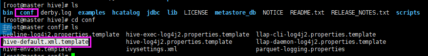
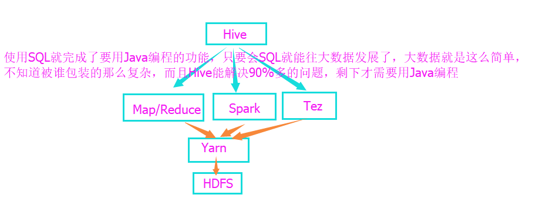

Hive入门
参考：马士兵 - Hive入门
制作人：小邹[yw_forgit@163.com]
该教程需要“Hadoop入门”的基础。
大数据工程师用到的Hive是最多的，学完本教程外加学习HQL的语法就可以去应聘大数据了。
Hive版本是2.1.1，已经不建议用Map/Reduce，但我们还是能用的。
1、简单概念
Hive是不需要写编程代码，只需要用HQL(跟SQL特别像)就能进行大数据运算。
2、安装配置Hive
下载安装
去官网下载这个tar.gz包（根据需要下载版本），上传到Linux服务器。（都是在master主机操作）
解压
解压之后改一下名称
进入目录，这就是Hive的目录结构
设置环境变量
设置环境变量HADOOP_HOME、HIVE_HOME，并把bin目录加入PATH中。
使配置生效
可以检查环境变量是否生效

配置文件
进入配置目录，找到hive-default.xml.template

复制它，改名为hive-site.xml
在Windows下通过notepad++编辑它
修改hive.metastore.schema.verification 为false，默认是true，这配置总是会做一些校验，据说是校验版本什么之类的，总是会出错，故关闭之。
在hive目录下创建tmp目录，即/usr/local/hive/tmp
查找配置中所有的 ${system:java.io.tmpdir} ，使用 /usr/local/hive/tmp 替换之，${xxx}这些都只是变量，替换就是改为真正的目录。
同理查找所有的 ${system:user.name} ，使用 root 替换之，这表示用户名称，登录名。
这条命令是初始化derby数据库，注意执行该命令会在当前命令的执行目录下建立metastore_db目录，而且下次执行“hive”启动命令时，也要在当前目录（即metastore_db的父目录），否则默认会又创建一个metastore_db目录，遇到问题，也可以删除metastore_db目录，重新执行初始化的命令。如果用mysql则是schematool -initSchema -dbType mysql，具体配置mysql，度娘，超级简单。
命令内容：schematool -initSchema -dbType derby
derby的作用，hive建表的数据在开发测试环境就是存在derby上，即hive目录下的metastore_db目录就是建表数据。
启动hive
启动之后，就会进入hive的命令窗口，使用“exit;”退出。
hive就是半个数据库，只能建表、查询数据，真正的数据在HDFS，而元数据（比如建表数据）是在derby或者mysql，所以hive只是一个翻译器。
3、简单使用HQL
这些操作与数据库的sql基本是一样的。
4、WordCount实现
建表（create table）
这个WordCount功能就跟之前在“Hadoop入门”教程的Map/Reduce实现的WordCount是一样的，现在是用Hive来实现。
表的名称是wordcount，这个表有一字段，叫line，line的类型是string。
如果HDFS、Yarn、Map/Reduce没有启动要先启动，这是教程是接着“Hadoop入门”教程的，我们这里用集群。Hive在单机也可以运行，伪分布式、真正的分布式也是可以运行。Hive命令在集群要先启动HDFS、YRAN，但是在单机就不用启动他们了。
dfs命令也能在hive上执行，但注意要用分号结束。下图就是之前HDFS的根路径的文件目录
列表一下tmp目录，可以发现Hive其实是有在操作HDFS的，这些都是在刚刚建表（create table）的时候创建的。
wordcount大佬出现了，但这是一个空目录

建表之后查询一下HDFS的目录是为了验证下图关系
load data
然后激动人心的时刻开始了，之前在Map/Reduce的时候要自己手写Java代码实现WordCount功能，而现在用Hive只需要用SQL就能完成。
看下之前的HDFS的数据，即input目录下的input.txt文件
load
data inpath '/input' overwrite into table wordcount;
表面上看是加载HDFS的“input”输入目录的文件内容加到wordcount这个表，实际上是wordcount表与HDFS的数据之间建立了关联，但是数据并没有移动，而以后访问表就能访问到HDFS的input目录的文件数据内容。
SQL操作
然后就能像查询mysql数据库一样，查询到HDFS的input目录的文件内容。看起来是查询wordcount表的内容，实际是HDFS的内容。
查询的结果，以空格对line字段的内容进行切割
explode的意思是把结果全部暴露，即爆炸成每个单词一行
解释一下，explode 一下之后的内容起个名叫word ，然后整个结果作为一个中间表result ，然后再对这个result表，进行count(*)（count(1)等同于count(*)）、group by操作
|
select word, count(1) from (select explode(split(line,
' ')) as word from wordcount) result group
by word; |
执行最奇迹的一刻，可以看到结果跟使用Map/Reduce的写代码的一样，并且会启动一个job去执行，后面还有map、reduce执行了多少，说明SQL翻译成了Map/Reduce程序了。
再回过头看看Hive的作用。

有人说，不学大数据了，写这种东西没有意思，哈哈哈。。。
5、实际开发的例子（大数据挖掘）
数据准备
这是搜狗很久以前一天内容的日志，SogouQ.reduced是没有原版的日志，sougou.dic是清洗过的，清洗工具可以用Pig，就是说格式转化。都是100多M。
SogouQ.reduced
sougou.dic，清洗之后用逗号分隔，我们用这个文件进行大数据挖掘。框出来的是搜索的关键字，后面的链接是搜索这个关键字的人打开的页面。清洗之后只有四个字段内容，分别是：时间、id、搜索关键词、url。
退出Hive命令
上传文件到master主机
然后把这个文件扔到HDFS的根目录
启动Hive
进入hive目录，启动hive。注意，Hadoop集群这些也要启动，如果没有启动的话。
建表
row format这一行的格式；delimited fields这一行里头，分隔每个字段；terminated by ','以逗号分隔。这样子sgd表示以逗号隔开的字段，sougou.dic文件也是以逗号分隔开的，随意这俩就匹配到了一起。
|
create table sgd(time string, id string, word string, url string) row format delimited fields terminated by ','; |
建立映射
建立映射
查询想要的结果
统计有几行/条数据
数据的内容，只显示10条
创建一个表，存放查询出来的最终结果，先查出sgd表的word内容，然后对结果进行count(*)统计分组，最后结果排序，这里一定要排序，因为那个日志文件的内容格式也有乱套的，不排序会影响后面的查看limit 10的记录。
|
create table sgd_result as select word, count(*) as count from (select word from sgd) t group by word order by count desc; |
查询前10条记录
这个例子就很接近实战了，实际开发就是这么用的，剩下的就是Hive的SQL语法了，就可以去大数据谋生了。
总结：
Hive用类似于SQL语言的方式做计算，将SQL语句查询转换为Map/Reduce操作，省去Java编程。
Hive是OLAP，OLAP就是不支持行级的插入操作，比如想插入一行进去，那不行，删除一行也不行，想删除一行就只能drop整个表，Hive更像一个AP，就是数据分析，OL其实也不是OL，但有人说是OL，OL就是在线，而Hive这个不是在线等的。另外不支持OLTP（MySQL就是这个），即不支持事务。
应用场合：
静态数据分析，数据不会频繁变化，不需要实时的结果响应，不适合一条数据进来就实时处理，这种要用Storm、Spark来做。